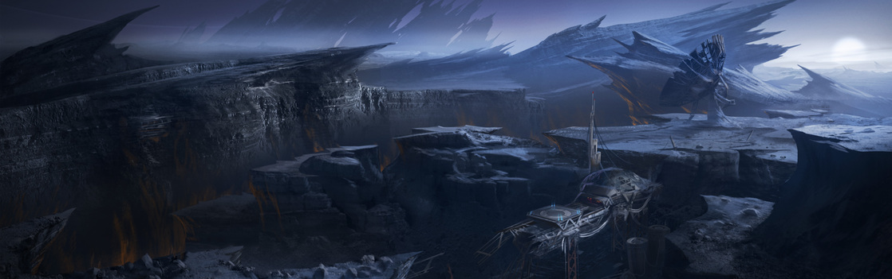

SYSTEM: HADES

Excurs - System: Hades
„Ich hatte mein Schiff auf Automatik gesetzt, mit Kurs auf Hades III, bevor ich auf das Mitteldeck hinunterstieg. Als ich mich auf den Laderaum zubewegte, sah ich etwas in der Dunkelheit. Ich kann nicht sagen, ob es ein Mensch war, aber es hatte auf jeden Fall eine menschliche Form. Ich hatte den Eindruck eines Körpers mit sichtbarer Muskulatur, überzogen mit bläulichen Adern. Es drehte sich zu mir um und sah mich an, als plötzlich ein Ruck durch mein Schiff ging. Es war verschwunden. Es war eine Nanosekunde einer Begegnung, aber ich wurde mit dem Gefühl einer schrecklichen Präsenz zurückgelassen. Es war, als ob ich etwas gesehen hätte, das mein Verstand nicht begreifen konnte. Das Gefühl hat mich nie verlassen. Ich verkaufte das Schiff als ich wieder zu Hause war. Es fühlte sich nicht mehr nach meinem an.“ – Eli Thorn, Navjumper
Hades ist ein gesetzloses System, das technisch gesehen als „Verlassen“ in der stellaren Kartographie des UEE aufgeführt ist. Als blauweißer B9-IV-Stern produziert Hades zu wenig Hitze für ein brauchbares grünes Band. Während mehrere Planeten im Orbit des Sterns überleben, hat keiner von ihnen genügend Wärme, um Leben zu ermöglichen. Allgemein gesagt – und im Gegensatz zu den anderen Sternen in Hades stellarer Nachbarschaft – scheint sich Hades dem Ende seines Lebenszyklus zu nähern.
Wo Corel I inzwischen nur noch ein reiner planetärer Kern ist, fehlt Corel II genau dieser. Sonnenstürme haben die Atmosphäre von Corel II vollständig zerstört und nichts als einen toten Planeten ohne Magnetfeld übrig gelassen. Dessen Oberfläche ist jedoch extrem reichhaltig an Mineralien, wodurch er zu einem lukrativen Ziel für zukünftige Bergbaumissionen werden könnte. Heute zählt er zum offiziellen UEE-Regierungsterritorium, wobei davon ausgegangen wird, dass die Rechte an den Mineralien in naher Zukunft versteigert werden dürften. Corel II, der innerhalb der Grenzen des grünen Bandes liegt, ist technisch gesehen auch ein Terraforming-Kandidat, wenn auch keiner guter.
Hades wurde erstmals 2515 von der Merry Crow, einem Trampfrachter, identifiziert. Die Entdeckung wurde nicht offiziell katalogisiert, da das Schiff mehrere gestohlene Frachteinheiten mit Fusionsantrieben geladen hatte. Neunzehn Jahre später fand sich der Navigator und letzter Überlebender der Crow, Jack Trapps, ohne Geld und an die Planetenoberfläche gebunden. Er verkaufte die umfassenden Logbücher des Schiffes um seine SLAM-Sucht zu finanzieren und das Hades System wurde anschließend offiziell von der Dynamo Corporation kartographiert.
Das Interesse am System stieg, nachdem die Erkundungsschiffe von Dynamo ihre ursprüngliche Suche abgeschlossen hatten. Während das System weiterhin als vollkommen ungeeignet für Terraforming eingestuft wurde, fanden die Forscher signifikante Beweise, dass alle Planeten des Systems einst Heimat einer nun ausgestorbenen, raumfahrenden Spezies waren. Jahrzehnte der Forschung haben ein interessantes Bild einer fortschrittlichen Gesellschaft enthüllt, die sich letztendlich durch interne Kriege selbst ausgelöscht hat. Der Großteil der Oberfläche der drei inneren Planeten ist übersät mit Einschlagskratern, während der letzte, ehemalige Planet wortwörtlich durch bisher unbekannte Mittel in zwei Hälften gesprengt wurde. Es war dieses gewaltige Ausmaß an Zerstörung, welches dem System seinen Namen einbrachte.
Auch wenn es keine Anlagen zum Auftanken und zur Reparatur von Raumschiffen im Hades-System gibt, so ist es trotzdem Teil einer aktiven Raumroute. Allerdings weichen nur wenige von ihrem Weg ab, um das Innere des Systems zu erkunden.
Die meisten derer, die bereit sind, zu den Planeten zu reisen sind Xenoarcheologen und Grabräuber. Trotz der gewaltigen Zerstörung wurden tausende Strukturen auf der Oberfläche der Grabwelten von Hades identifiziert und viele weitere werden im Untergrund vermutet. Unzählige Artefakte werden von diesen Stätten jährlich geborgen oder gestohlen und es wird vermutet, dass es mehrere formell „gesetzlose“ Unternehmungen gibt, mit dem Ziel, Hinweise auf die Technologien zu finden, mit denen sich die Hadesianer selbst ausgelöscht haben.
Tod und Zerstörung sind allerdings nicht nur auf die Oberfläche von Hades III beschränkt. An einem Lagrangepunkt hoch über dem Planeten ist ein sehr viel jüngerer Friedhof zu finden. Im Jahre 2901 erlitt ein Schiff der XiAn einen Maschinenschaden während es versuchte, Osolans durch Hades zu schmuggeln. Während die Crew versuchte das Schiff wieder in Gang zu bringen, entkamen die eingesperrten Osolans und schlachteten, trotz ihrer eigentlich zahmen Natur, erst die Crew, dann die Crew des Rettungsschiffs und schließlich sich gegenseitig ab.

Hades ist ein gesetzloses System, das technisch gesehen als „Verlassen“ in der stellaren Kartographie des UEE aufgeführt ist. Als blauweißer B9-IV-Stern produziert Hades zu wenig Hitze für ein brauchbares grünes Band. Während mehrere Planeten im Orbit des Sterns überleben, hat keiner von ihnen genügend Wärme, um Leben zu ermöglichen. Allgemein gesagt – und im Gegensatz zu den anderen Sternen in Hades stellarer Nachbarschaft – scheint sich Hades dem Ende seines Lebenszyklus zu nähern.
Wo Corel I inzwischen nur noch ein reiner planetärer Kern ist, fehlt Corel II genau dieser. Sonnenstürme haben die Atmosphäre von Corel II vollständig zerstört und nichts als einen toten Planeten ohne Magnetfeld übrig gelassen. Dessen Oberfläche ist jedoch extrem reichhaltig an Mineralien, wodurch er zu einem lukrativen Ziel für zukünftige Bergbaumissionen werden könnte. Heute zählt er zum offiziellen UEE-Regierungsterritorium, wobei davon ausgegangen wird, dass die Rechte an den Mineralien in naher Zukunft versteigert werden dürften. Corel II, der innerhalb der Grenzen des grünen Bandes liegt, ist technisch gesehen auch ein Terraforming-Kandidat, wenn auch keiner guter.
Hades wurde erstmals 2515 von der Merry Crow, einem Trampfrachter, identifiziert. Die Entdeckung wurde nicht offiziell katalogisiert, da das Schiff mehrere gestohlene Frachteinheiten mit Fusionsantrieben geladen hatte. Neunzehn Jahre später fand sich der Navigator und letzter Überlebender der Crow, Jack Trapps, ohne Geld und an die Planetenoberfläche gebunden. Er verkaufte die umfassenden Logbücher des Schiffes um seine SLAM-Sucht zu finanzieren und das Hades System wurde anschließend offiziell von der Dynamo Corporation kartographiert.
Das Interesse am System stieg, nachdem die Erkundungsschiffe von Dynamo ihre ursprüngliche Suche abgeschlossen hatten. Während das System weiterhin als vollkommen ungeeignet für Terraforming eingestuft wurde, fanden die Forscher signifikante Beweise, dass alle Planeten des Systems einst Heimat einer nun ausgestorbenen, raumfahrenden Spezies waren. Jahrzehnte der Forschung haben ein interessantes Bild einer fortschrittlichen Gesellschaft enthüllt, die sich letztendlich durch interne Kriege selbst ausgelöscht hat. Der Großteil der Oberfläche der drei inneren Planeten ist übersät mit Einschlagskratern, während der letzte, ehemalige Planet wortwörtlich durch bisher unbekannte Mittel in zwei Hälften gesprengt wurde. Es war dieses gewaltige Ausmaß an Zerstörung, welches dem System seinen Namen einbrachte.
Auch wenn es keine Anlagen zum Auftanken und zur Reparatur von Raumschiffen im Hades-System gibt, so ist es trotzdem Teil einer aktiven Raumroute. Allerdings weichen nur wenige von ihrem Weg ab, um das Innere des Systems zu erkunden.
Die meisten derer, die bereit sind, zu den Planeten zu reisen sind Xenoarcheologen und Grabräuber. Trotz der gewaltigen Zerstörung wurden tausende Strukturen auf der Oberfläche der Grabwelten von Hades identifiziert und viele weitere werden im Untergrund vermutet. Unzählige Artefakte werden von diesen Stätten jährlich geborgen oder gestohlen und es wird vermutet, dass es mehrere formell „gesetzlose“ Unternehmungen gibt, mit dem Ziel, Hinweise auf die Technologien zu finden, mit denen sich die Hadesianer selbst ausgelöscht haben.
Hades I
Dem ersten Planeten des Systems fehlt jegliche Form einer Atmosphäre. Mehrere weit verteilte, unnatürliche Krater und Ruinen deuten darauf hin, dass Hades I einst in einem beschränkten Maß von den Hadesianern kolonialisiert wurde. Wissenschaftler waren bisher nicht in der Lage herauszufinden, ob der Planet schon immer so war wie er heute ist oder ob seine fehlende Atmosphäre ein weiteres Opfer des Krieges war.Hades II
Hades II hat seine Atmosphäre zwar behalten, aber es ist eine sehr brutale Atmosphäre. Umweltanzüge müssen immer getragen werden und aufgrund der Mengen an vulkanischer Asche in der Luft sollte man nie weit von einem Atemgerät entfernt sein. Hadesianische Städte erstrecken sich über die Landschaft, jede von ihnen tot und langsam durch Wind und Erosion am Verschwinden. Die instabile Natur der Ruinen macht die Oberfläche zu einem sehr gefährlichen Ort. Es wurden Adern von Kherium, einem für die XiAn wertvollen Mineral, das zur Herstellung ihrer Panzerplatten verwendet wird, auf Hades II entdeckt. Aufgrund des archäologischen Werts des Systems wurde aber nie eine offizielle Grabung autorisiert.Hades III
Auf der Oberfläche ähnelt Hades III seinen Brüdern Hades I und II: Es ist eine grauenhafte Landschaft aus Einschlagskratern und zerstörten Städten. Die Atmosphäre ist toxisch und nur die am besten ausgestatteten Xenoarch-Teams sollten dort landen. Trotz alledem wurden über die Jahre unzählige Ruinen dokumentiert, was in gewissen Kreisen den Glauben daran festigte, dass in den Ruinen von Hades noch immer sehr viel zu entdecken sei.Tod und Zerstörung sind allerdings nicht nur auf die Oberfläche von Hades III beschränkt. An einem Lagrangepunkt hoch über dem Planeten ist ein sehr viel jüngerer Friedhof zu finden. Im Jahre 2901 erlitt ein Schiff der XiAn einen Maschinenschaden während es versuchte, Osolans durch Hades zu schmuggeln. Während die Crew versuchte das Schiff wieder in Gang zu bringen, entkamen die eingesperrten Osolans und schlachteten, trotz ihrer eigentlich zahmen Natur, erst die Crew, dann die Crew des Rettungsschiffs und schließlich sich gegenseitig ab.
Hades IV
Hades IV ist allgemein als „Halber Planet“ eingestuft, was zu dem teilweise verwirrenden „3.5 Welten“ Eintrag in der offiziellen Liste des UEE geführt hat. Während der Planet immer noch existiert und nicht in ein Asteroidenfeld zerbrochen ist, tut er dies in zwei geteilten Hälften. Es ist unmöglich, den unglaublichen Schrecken einer Waffe völlig zu verstehen, welche dazu in der Lage ist, ganze Planeten zu zerstören. Es ist jedoch unmöglich, nicht von diesem Spektakel dieser Verwüstung fasziniert zu sein.Die Hadesianer
Es gibt so viele Theorien über die Natur der Hadesianer wie es Sterne am Himmel gibt. Jedes Jahr schwärmt ein neuer Strom an frisch absolvierten Studenten in das System in der Hoffnung, dass sie es sind, die endlich das Mysterium dieses Systems knacken und jedes Jahr reisen sie frustriert wieder ab. Das bedeutet allerdings nicht, dass die Hadesianer ein komplettes Geheimnis sind. Wissenschaftler haben es geschafft, ihre physischen Ausmaße grob festzulegen und haben den vernichtenden Krieg in einen Zeitraum von vor rund 300.000 Jahren eingeordnet. Basierend auf Skelettfunden und dem Aufbau der Ruinen waren die Hadesianer rundliche Kreaturen mit einem bulligen Körper. Mehrere dünne Auswüchse – die Anzahl war wahrscheinlich von Hadesianer zu Hadesianer unterschiedlich – und ein paar lange Arme machten die Figur komplett.